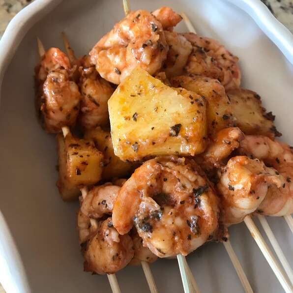

Marinated Grilled Shrimp

Description
A very simple and easy marinade made with frozen or fresh shrimp.
Try it with a salad, baked potato, and garlic bread.
Ingredients
- 3 cloves garlic, minced
- ⅓ cup olive oil
- ¼ cup tomato sauce
- 2 tablespoons red wine vinegar
- 2 tablespoons chopped fresh basil
- ½ teaspoon salt
- ¼ teaspoon cayenne pepper
- 2 pounds fresh shrimp, peeled and deveined
- 6 each skewers
Steps
- In a large bowl, stir together the garlic, olive oil, tomato sauce, and red wine
vinegar. Season with basil, salt, and cayenne pepper.
- Add shrimp to the bowl,
and stir until evenly coated. Cover, and refrigerate for 30 minutes to 1 hour,
stirring once or twice.
- Preheat grill for medium heat. Thread shrimp onto skewers, piercing once near
the tail and once near the head. Discard marinade.
- Lightly oil grill grate. Cook shrimp on preheated grill for 2 to 3 minutes per side,
or until opaque.